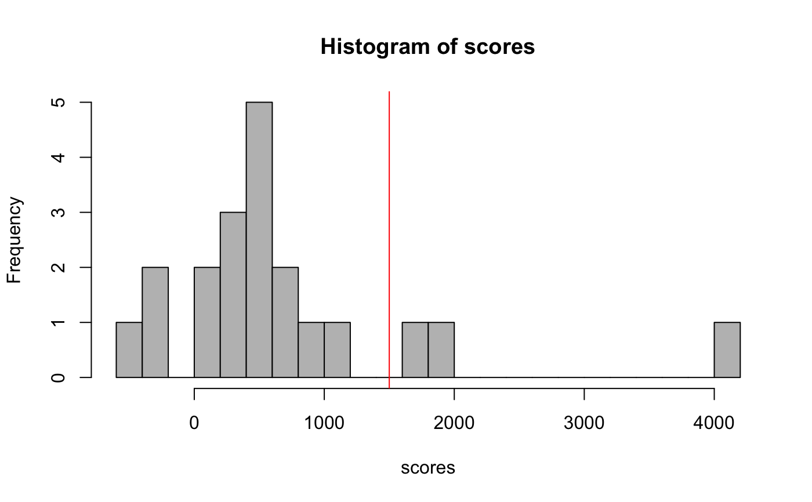
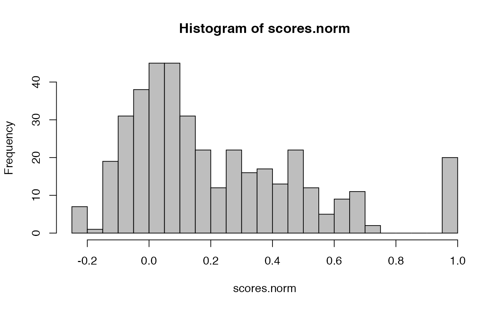
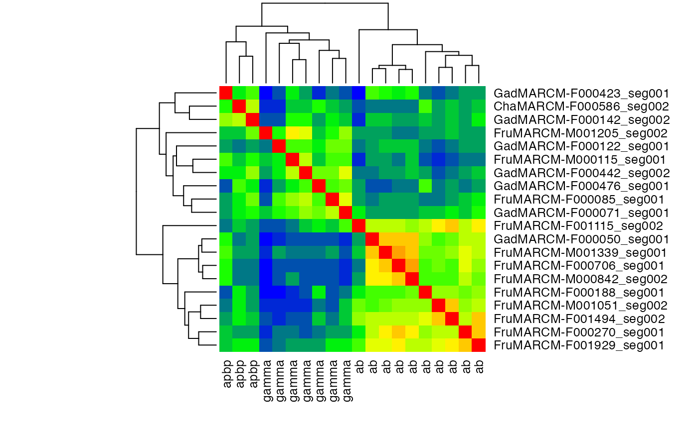

Uses the NBLAST algorithm that compares the morphology of two neurons. For
more control over the parameters of the algorithm, see the arguments of
NeuriteBlast.
nblast(query, target = getOption("nat.default.neuronlist"), smat = NULL, sd = 3, version = c(2, 1), normalised = FALSE, UseAlpha = FALSE, OmitFailures = NA, ...)
| query | the query neuron. |
|---|---|
| target | a |
| smat | the scoring matrix to use (see details) |
| sd | Standard deviation to use in distance dependence of NBLAST v1
algorithm. Ignored when |
| version | the version of the algorithm to use (the default, 2, is the latest). |
| normalised | whether to divide scores by the self-match score of the query |
| UseAlpha | whether to weight the similarity score for each matched
segment to emphasise long range neurites rather then arbours (default:
FALSE, see |
| OmitFailures | Whether to omit neurons for which |
| ... | Additional arguments passed to |
Named list of similarity scores.
when smat=NULL options("nat.nblast.defaultsmat") will
be checked and if NULL, then smat.fcwb or
smat_alpha.fcwb will be used depending on the value of
UseAlpha.
When OmitFailures is not NA, individual nblast calls will be
wrapped in try to ensure that failure for any single neuron does not
abort the whole nblast call. When OmitFailures=FALSE, missing
values will be left as NA. OmitFailures=TRUE is not (yet)
implemented. If you want to drop scores for neurons that failed you will
need to set OmitFailures=FALSE and then use na.omit or
similar to post-process the scores.
Note that when OmitFailures=FALSE error messages will not be printed
because the call is wrapped as try(expr, silent=TRUE).
Internally, the plyr package is used to provide options for
parallelising NBLAST and displaying progress. To display a progress bar as
the scores are computed, add .progress="text" to the arguments
(non-text progress bars are available -- see
create_progress_bar). To parallelise, add
.parallel=TRUE to the arguments. In order to make use of parallel
calculation, you must register a parallel backend that will distribute the
computations. There are several possible backends, the simplest of which is
the multicore option made available by doMC, which spreads the load
across cores of the same machine. Before using this, the backend must be
registered using registerDoMC (see example below).
The nblast version argument presently
exposes two versions of the algorithm; both use the same core procedure of
aligning two vector clouds, segment by segment, and then computing the
distance and absolute dot product between the nearest segment in the target
neuron for every segment in the query neuron. However they differ
significantly in the procedure used to calculate a score using this set of
distances and absolute dot products.
Version 1 of the algorithm uses a standard deviation (argument
sd) as a user-supplied parameter for a negative exponential
weighting function that determines the relationship between score and the
distance between segments. This corresponds to the parameter \(\sigma\)
in the weighting function:
\(f=\sqrt{|\vec{u_{i}}\cdot\vec{v_{i}}|\exp\left(-d_{i}^{2}/2\sigma^{2}\right)}\)
This is the same approach described in Kohl et al 2013 and the similarity
scores in the interval (0,1) described in that paper can exactly
recapitulated by setting version=1 and normalised=TRUE.
Version 2 of the algorithm is described in Costa et al 2014. This
uses a more sophisticated and principled scoring approach based on a
log-odds ratio defined by the distribution of matches and non-matches in
sample data. This information is passed to the nblast function in
the form of a scoring matrix (which can be computed by
create_scoringmatrix); a default scoring matrix
smat.fcwb has been constructed for Drosophila neurons.
Which version should I use? You should use version 2 if you are working with Drosophila neurons or you have sufficient training data (in the form of validated matching and random neuron pairs to construct a scoring matrix). If this is not the case, you can always fall back to version 1, setting the free parameter (sd or \(\sigma\)) to a value that encapsulates your understanding of the location precision of neurons in your species/brain region of interest. In the fly brain we have used \(\sigma=3\) microns, since previous estimates of the localisation of identifiable features of neurons (Jefferis, Potter et al 2007) are of this order.
UseAlphaIn NBLAST v2, the alpha factor for a segment
indicates whether neighbouring segments are aligned in a similar direction
(as typical for e.g. a long range axonal projection) or randomly aligned
(as typical for dendritic arbours). See Costa et al. for details. Setting
UseAlpha=TRUE will emphasise the axon, primary neurite etc. of a
neuron. This can be a particularly useful option e.g. when you are
searching by a traced fragment that you know or suspect to follow an axon
tract.
Kohl, J. Ostrovsky, A.D., Frechter, S., and Jefferis, G.S.X.E (2013). A bidirectional circuit switch reroutes pheromone signals in male and female brains. Cell 155 (7), 1610--23 doi: 10.1016/j.cell.2013.11.025.
Costa, M., Ostrovsky, A.D., Manton, J.D., Prohaska, S., and Jefferis, G.S.X.E. (2014). NBLAST: Rapid, sensitive comparison of neuronal structure and construction of neuron family databases. bioRxiv preprint. doi: 10.1101/006346.
Jefferis G.S.X.E., Potter C.J., Chan A.M., Marin E.C., Rohlfing T., Maurer C.R.J., and Luo L. (2007). Comprehensive maps of Drosophila higher olfactory centers: spatially segregated fruit and pheromone representation. Cell 128 (6), 1187--1203. doi:10.1016/j.cell.2007.01.040
nat-package, nblast_allbyall,
create_scoringmatrix, smat.fcwb
# load sample Kenyon cell data from nat package data(kcs20, package='nat') # search one neuron against all neurons scores=nblast(kcs20[['GadMARCM-F000142_seg002']], kcs20) # scores from best to worst, top hit is of course same neuron sort(scores, decreasing = TRUE)#> GadMARCM-F000142_seg002 ChaMARCM-F000586_seg002 GadMARCM-F000423_seg001 #> 4043.1766 1914.8224 1772.8506 #> GadMARCM-F000442_seg002 FruMARCM-M000115_seg001 FruMARCM-F000085_seg001 #> 1007.4565 853.8108 713.2106 #> FruMARCM-F001929_seg001 FruMARCM-F001494_seg002 GadMARCM-F000050_seg001 #> 604.4071 481.4737 480.4146 #> GadMARCM-F000071_seg001 FruMARCM-M001339_seg001 FruMARCM-F000188_seg001 #> 448.1516 433.9340 404.0470 #> GadMARCM-F000476_seg001 FruMARCM-F000270_seg001 FruMARCM-F000706_seg001 #> 313.2021 254.7516 204.2116 #> FruMARCM-M000842_seg002 FruMARCM-M001051_seg002 FruMARCM-M001205_seg002 #> 196.4543 140.8164 -251.4999 #> GadMARCM-F000122_seg001 FruMARCM-F001115_seg002 #> -262.2352 -520.2581hist(scores, breaks=25, col='grey')abline(v=1500, col='red')# plot query neuron open3d()#> glX #> 2# plot top 3 hits (including self match with thicker lines) plot3d(kcs20[which(sort(scores, decreasing = TRUE)>1500)], lwd=c(3,1,1)) rest=names(which(scores<1500)) plot3d(rest, db=kcs20, col='grey', lwd=0.5) # normalised scores (i.e. self match = 1) of all neurons vs each other # note use of progress bar scores.norm=nblast(kcs20, kcs20, normalised = TRUE, .progress="text")#> | | | 0% | |==== | 5% | |======= | 10% | |========== | 15% | |============== | 20% | |================== | 25% | |===================== | 30% | |======================== | 35% | |============================ | 40% | |================================ | 45% | |=================================== | 50% | |====================================== | 55% | |========================================== | 60% | |============================================== | 65% | |================================================= | 70% | |==================================================== | 75% | |======================================================== | 80% | |============================================================ | 85% | |=============================================================== | 90% | |================================================================== | 95% | |======================================================================| 100%hist(scores.norm, breaks=25, col='grey')# produce a heatmap from normalised scores jet.colors <- colorRampPalette( c("blue", "green", "yellow", "red") ) heatmap(scores.norm, labCol = with(kcs20,type), col=jet.colors(20), symm = TRUE)# NOT RUN { # Parallelise NBLASTing across 4 cores using doMC package library(doMC) registerDoMC(4) scores.norm2=nblast(kcs20, kcs20, normalised=TRUE, .parallel=TRUE) stopifnot(all.equal(scores.norm2, scores.norm)) # }